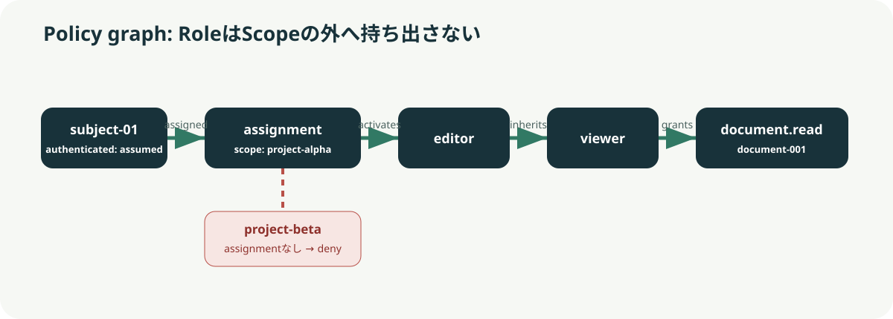
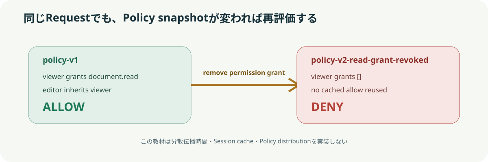

Scenarioを操作する
説明用UIの選択を、保存済みの実行結果へ対応付けています。最初に結果を予想し、Graph上のどこでallow/denyが決まるか確認してください。
操作UI（説明モデル）
Python実観測
Role継承でread
Decision reasoninherited_permission
ALLOW
Policy revisionpolicy-v1
Request scopeproject-alpha
Decision ID0984…54e1
Graphと状態遷移


実装
model.pyは固定Policyを評価し、Role closureと判定過程を返します。
Evidence
再現
python3 verify.pypython3 observe.py --check